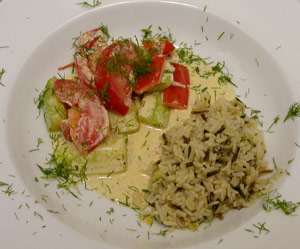

Gurken-Peperoni-Tomaten Ragout
5 von 6peperoni, gurken und tomaten in grobe würfel schneiden. knoblauch und zwiebeln in butter andünsten. peperoni und gurken beigeben. mit etwas weissweis ablöschen. mit salz, pfeffer und paprika würzen. tomaten dazu. sauerrahm und etwas dill dazugeben.
